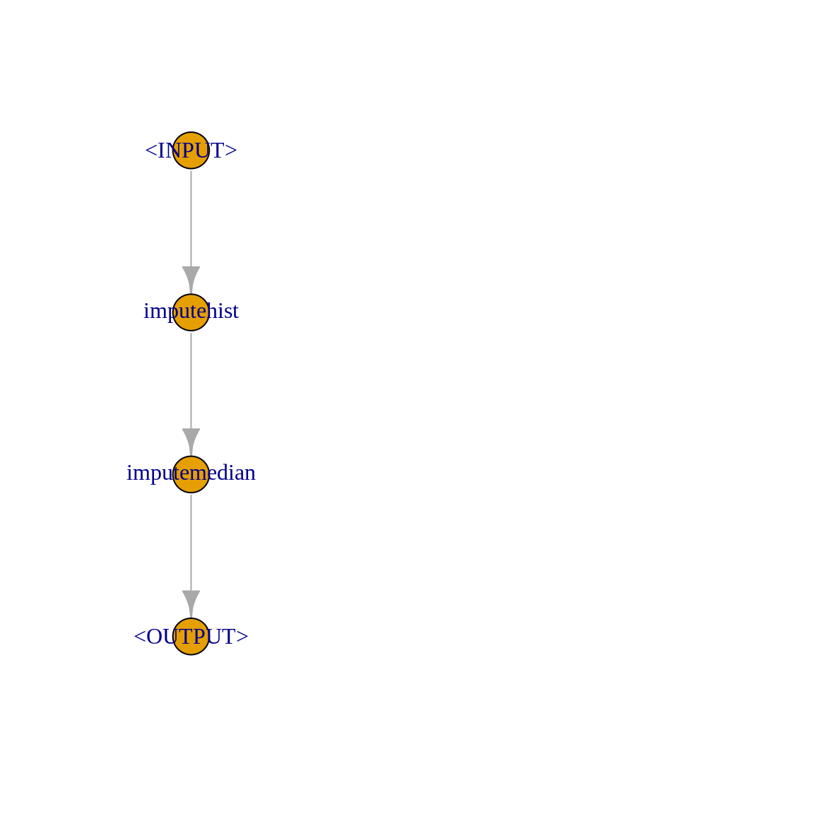
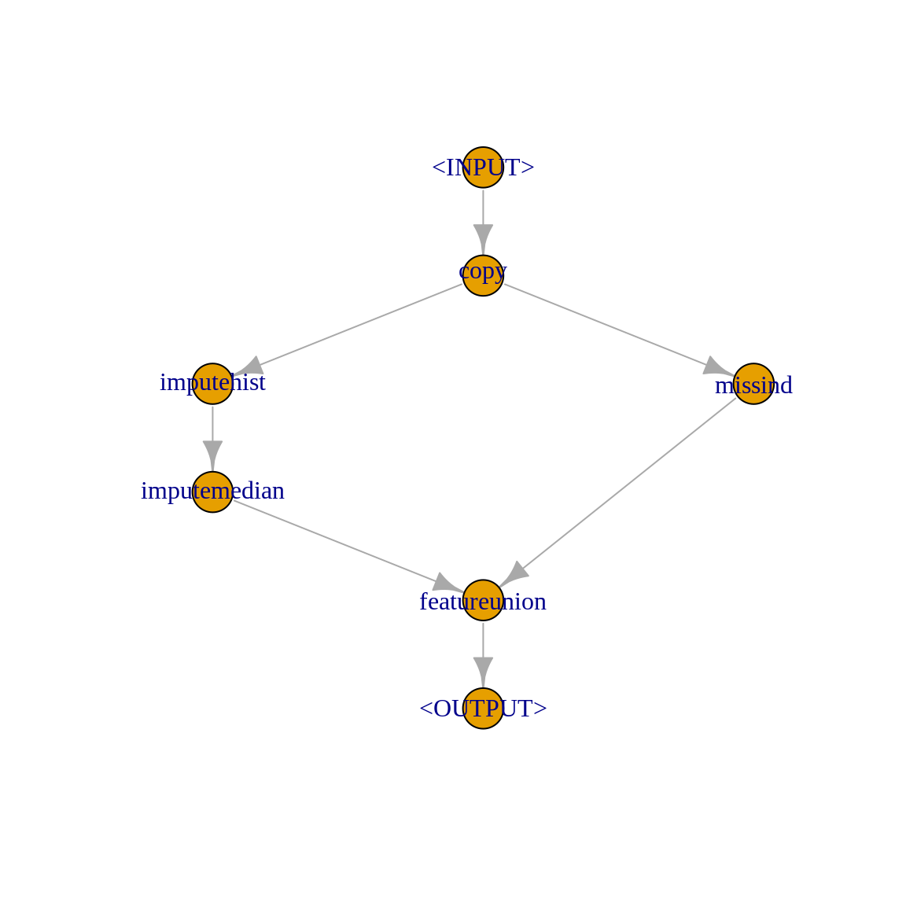
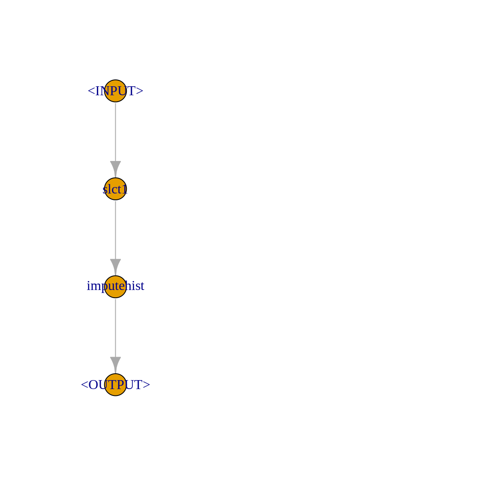
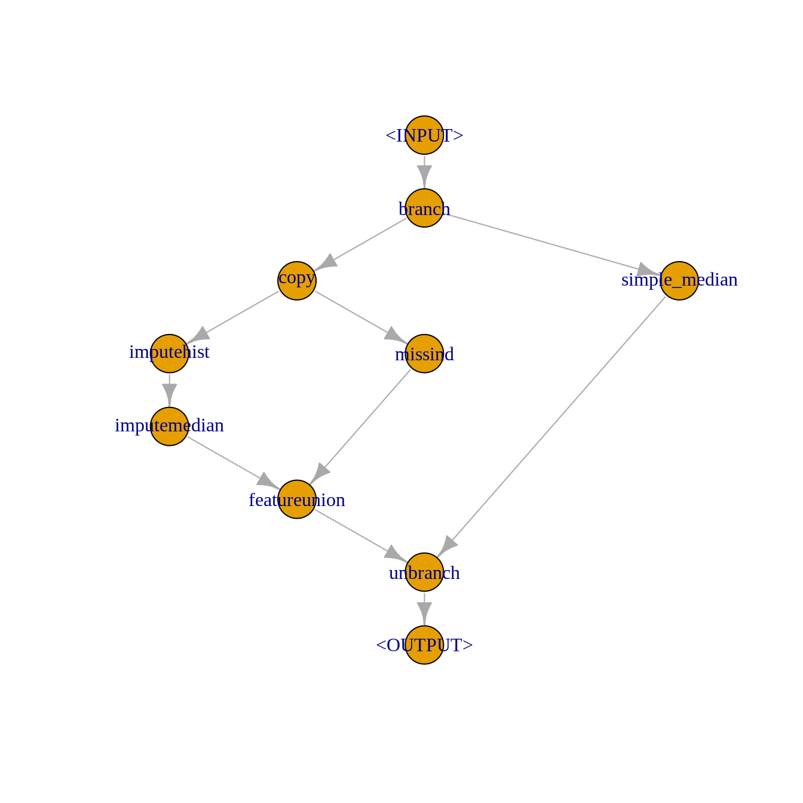
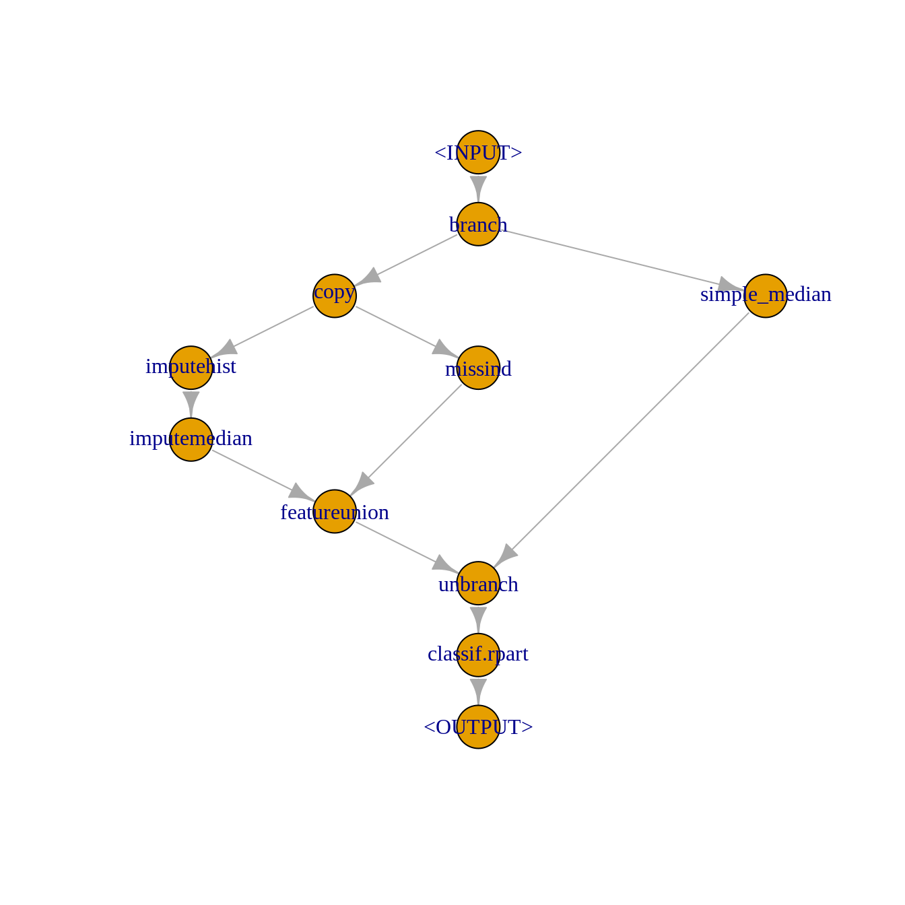

This tutorial explains how applying different preprocessing steps on different features and branching of preprocessing steps can be achieved using the mlr3pipelines package.
mlr3pipelines offers a very flexible way to create data preprocessing steps. This is achieved by a modular approach using PipeOps. For detailed overview check the mlr3book.
Recommended prior readings:
This post covers:
library(mlr3)
library(mlr3pipelines)
library(mlr3tuning)
library(paradox)The Pima Indian Diabetes classification task will be used.
pima_tsk = tsk("pima")
pima_tsk$data()
diabetes age glucose insulin mass pedigree pregnant pressure triceps
1: pos 50 148 NA 33.6 0.627 6 72 35
2: neg 31 85 NA 26.6 0.351 1 66 29
3: pos 32 183 NA 23.3 0.672 8 64 NA
4: neg 21 89 94 28.1 0.167 1 66 23
5: pos 33 137 168 43.1 2.288 0 40 35
---
764: neg 63 101 180 32.9 0.171 10 76 48
765: neg 27 122 NA 36.8 0.340 2 70 27
766: neg 30 121 112 26.2 0.245 5 72 23
767: pos 47 126 NA 30.1 0.349 1 60 NA
768: neg 23 93 NA 30.4 0.315 1 70 31
skimr::skim(pima_tsk$data())| Name | pima_tsk$data() |
| Number of rows | 768 |
| Number of columns | 9 |
| _______________________ | |
| Column type frequency: | |
| factor | 1 |
| numeric | 8 |
| ________________________ | |
| Group variables | None |
Variable type: factor
| skim_variable | n_missing | complete_rate | ordered | n_unique | top_counts |
|---|---|---|---|---|---|
| diabetes | 0 | 1 | FALSE | 2 | neg: 500, pos: 268 |
Variable type: numeric
| skim_variable | n_missing | complete_rate | mean | sd | p0 | p25 | p50 | p75 | p100 | hist |
|---|---|---|---|---|---|---|---|---|---|---|
| age | 0 | 1.00 | 33.24 | 11.76 | 21.00 | 24.00 | 29.00 | 41.00 | 81.00 | ▇▃▁▁▁ |
| glucose | 5 | 0.99 | 121.69 | 30.54 | 44.00 | 99.00 | 117.00 | 141.00 | 199.00 | ▁▇▇▃▂ |
| insulin | 374 | 0.51 | 155.55 | 118.78 | 14.00 | 76.25 | 125.00 | 190.00 | 846.00 | ▇▂▁▁▁ |
| mass | 11 | 0.99 | 32.46 | 6.92 | 18.20 | 27.50 | 32.30 | 36.60 | 67.10 | ▅▇▃▁▁ |
| pedigree | 0 | 1.00 | 0.47 | 0.33 | 0.08 | 0.24 | 0.37 | 0.63 | 2.42 | ▇▃▁▁▁ |
| pregnant | 0 | 1.00 | 3.85 | 3.37 | 0.00 | 1.00 | 3.00 | 6.00 | 17.00 | ▇▃▂▁▁ |
| pressure | 35 | 0.95 | 72.41 | 12.38 | 24.00 | 64.00 | 72.00 | 80.00 | 122.00 | ▁▃▇▂▁ |
| triceps | 227 | 0.70 | 29.15 | 10.48 | 7.00 | 22.00 | 29.00 | 36.00 | 99.00 | ▆▇▁▁▁ |
Several features of the pima task have missing values:
pima_tsk$missings()
diabetes age glucose insulin mass pedigree pregnant pressure triceps
0 0 5 374 11 0 0 35 227 A common approach in such situations is to impute the missing values and to add a missing indicator column as explained in the Impute missing variables post. Suppose we want to use
imputehist on features “glucose”, “mass” and “pressure” which have only few missing values andimputemedian on features “insulin” and “triceps” which have much more missing values.In the following subsections, we show two approaches to implement this.
Using the affect_columns argument of a PipeOp to define the variables on which a PipeOp will operate with an appropriate selector function:
# imputes values based on histogram
hist_imp = po("imputehist",
param_vals = list(affect_columns = selector_name(c("glucose", "mass", "pressure"))))
# imputes values using the median
median_imp = po("imputemedian",
param_vals = list(affect_columns = selector_name(c("insulin", "triceps"))))
# adds an indicator column for each feature with missing values
miss_ind = po("missind")When PipeOps are constructed this way, they will perform the specified preprocessing step on the appropriate features and pass all the input features to the subsequent steps:
# no missings in "glucose", "mass" and "pressure"
hist_imp$train(list(pima_tsk))[[1]]$missings()
diabetes age insulin pedigree pregnant triceps glucose mass pressure
0 0 374 0 0 227 0 0 0
# no missings in "insulin" and "triceps"
median_imp$train(list(pima_tsk))[[1]]$missings()
diabetes age glucose mass pedigree pregnant pressure insulin triceps
0 0 5 11 0 0 35 0 0 We construct a pipeline that combines hist_imp and median_imp. Here, hist_imp will impute the features “glucose”, “mass” and “pressure”, and median_imp will impute “insulin” and “triceps”. In each preprocessing step, all the input features are passed to the next step. In the end, we obtain a data set without missing values:
# combine the two impuation methods
impute_graph = hist_imp %>>% median_imp
impute_graph$plot(html = FALSE)
impute_graph$train(pima_tsk)[[1]]$missings()
diabetes age pedigree pregnant glucose mass pressure insulin triceps
0 0 0 0 0 0 0 0 0 The missind operator replaces features with missing values with a missing value indicator:
miss_ind$train(list(pima_tsk))[[1]]$data()
diabetes missing_glucose missing_insulin missing_mass missing_pressure missing_triceps
1: pos present missing present present present
2: neg present missing present present present
3: pos present missing present present missing
4: neg present present present present present
5: pos present present present present present
---
764: neg present present present present present
765: neg present missing present present present
766: neg present present present present present
767: pos present missing present present missing
768: neg present missing present present presentObviously, this step can not be applied to the already imputed data as there are no missing values. If we want to combine the previous two imputation steps with a third step that adds missing value indicators, we would need to copy the data two times and supply the first copy to impute_graph and the second copy to miss_ind using gunion. Finally, the two outputs can be combined with featureunion:
impute_missind = po("copy", 2) %>>%
gunion(list(impute_graph, miss_ind)) %>>%
po("featureunion")
impute_missind$plot(html = FALSE)
impute_missind$train(pima_tsk)[[1]]$data()
diabetes age pedigree pregnant glucose mass pressure insulin triceps missing_glucose
1: pos 50 0.627 6 148 33.6 72 125 35 present
2: neg 31 0.351 1 85 26.6 66 125 29 present
3: pos 32 0.672 8 183 23.3 64 125 29 present
4: neg 21 0.167 1 89 28.1 66 94 23 present
5: pos 33 2.288 0 137 43.1 40 168 35 present
---
764: neg 63 0.171 10 101 32.9 76 180 48 present
765: neg 27 0.340 2 122 36.8 70 125 27 present
766: neg 30 0.245 5 121 26.2 72 112 23 present
767: pos 47 0.349 1 126 30.1 60 125 29 present
768: neg 23 0.315 1 93 30.4 70 125 31 present
missing_insulin missing_mass missing_pressure missing_triceps
1: missing present present present
2: missing present present present
3: missing present present missing
4: present present present present
5: present present present present
---
764: present present present present
765: missing present present present
766: present present present present
767: missing present present missing
768: missing present present presentWe can use the select PipeOp to select the appropriate features and then apply the desired impute PipeOp on them:
hist_imp2 = po("select",
selector = selector_name(c("glucose", "mass", "pressure")),
id = "slct1") %>>% # unique id so we can combine it in a pipeline with other select PipeOps
po("imputehist")
hist_imp2$plot(html = FALSE) 
hist_imp2$train(pima_tsk)[[1]]$data()
diabetes glucose mass pressure
1: pos 148 33.6 72
2: neg 85 26.6 66
3: pos 183 23.3 64
4: neg 89 28.1 66
5: pos 137 43.1 40
---
764: neg 101 32.9 76
765: neg 122 36.8 70
766: neg 121 26.2 72
767: pos 126 30.1 60
768: neg 93 30.4 70
median_imp2 = po("select", selector = selector_name(c("insulin", "triceps")), id = "slct2") %>>%
po("imputemedian")
median_imp2$train(pima_tsk)[[1]]$data()
diabetes insulin triceps
1: pos 125 35
2: neg 125 29
3: pos 125 29
4: neg 94 23
5: pos 168 35
---
764: neg 180 48
765: neg 125 27
766: neg 112 23
767: pos 125 29
768: neg 125 31To reproduce the result of the fist example (1.), we need to copy the data four times and apply hist_imp2, median_imp2 and miss_ind on each of the three copies. The fourth copy is required to select the features without missing values and to append it to the final result. We can do this as follows:
other_features = pima_tsk$feature_names[pima_tsk$missings()[-1] == 0]
impute_missind2 = po("copy", 4) %>>%
gunion(list(hist_imp2,
median_imp2,
miss_ind,
po("select", selector = selector_name(other_features), id = "slct3"))) %>>%
po("featureunion")
impute_missind2$plot(html = FALSE)
impute_missind2$train(pima_tsk)[[1]]$data()
diabetes glucose mass pressure insulin triceps missing_glucose missing_insulin missing_mass
1: pos 148 33.6 72 125 35 present missing present
2: neg 85 26.6 66 125 29 present missing present
3: pos 183 23.3 64 125 29 present missing present
4: neg 89 28.1 66 94 23 present present present
5: pos 137 43.1 40 168 35 present present present
---
764: neg 101 32.9 76 180 48 present present present
765: neg 122 36.8 70 125 27 present missing present
766: neg 121 26.2 72 112 23 present present present
767: pos 126 30.1 60 125 29 present missing present
768: neg 93 30.4 70 125 31 present missing present
missing_pressure missing_triceps age pedigree pregnant
1: present present 50 0.627 6
2: present present 31 0.351 1
3: present missing 32 0.672 8
4: present present 21 0.167 1
5: present present 33 2.288 0
---
764: present present 63 0.171 10
765: present present 27 0.340 2
766: present present 30 0.245 5
767: present missing 47 0.349 1
768: present present 23 0.315 1Note that when there is one input channel, it is automatically copied as many times as needed for the downstream PipeOps. In other words, the code above works also without po("copy", 4):
impute_missind3 = gunion(list(hist_imp2,
median_imp2,
miss_ind,
po("select", selector = selector_name(other_features), id = "slct3"))) %>>%
po("featureunion")
impute_missind3$train(pima_tsk)[[1]]$data()
diabetes glucose mass pressure insulin triceps missing_glucose missing_insulin missing_mass
1: pos 148 33.6 72 125 35 present missing present
2: neg 85 26.6 66 125 29 present missing present
3: pos 183 23.3 64 125 29 present missing present
4: neg 89 28.1 66 94 23 present present present
5: pos 137 43.1 40 168 35 present present present
---
764: neg 101 32.9 76 180 48 present present present
765: neg 122 36.8 70 125 27 present missing present
766: neg 121 26.2 72 112 23 present present present
767: pos 126 30.1 60 125 29 present missing present
768: neg 93 30.4 70 125 31 present missing present
missing_pressure missing_triceps age pedigree pregnant
1: present present 50 0.627 6
2: present present 31 0.351 1
3: present missing 32 0.672 8
4: present present 21 0.167 1
5: present present 33 2.288 0
---
764: present present 63 0.171 10
765: present present 27 0.340 2
766: present present 30 0.245 5
767: present missing 47 0.349 1
768: present present 23 0.315 1Usually, po("copy") is required when there are more than one input channels and multiple output channels, and their numbers do not match.
We can not know if the combination of a learner with this preprocessing graph will benefit from the imputation steps and the added missing value indicators. Maybe it would have been better to just use imputemedian on all the variables. We could investigate this assumption by adding an alternative path to the graph with the mentioned imputemedian. This is possible using the “branch” PipeOp:
median_imp3 = po("imputemedian", id = "simple_median") # add the id so it does not clash with `median_imp`
branches = c("impute_missind", "simple_median") # names of the branches
graph_branch = po("branch", branches) %>>%
gunion(list(impute_missind, median_imp3)) %>>%
po("unbranch")
graph_branch$plot(html = FALSE)
To finalize the graph, we combine it with a rpart learner:
rpart_lrn = lrn("classif.rpart")
grph = graph_branch %>>%
rpart_lrn
grph$plot(html = FALSE)
To define the parameters to be tuned, we first check the available ones in the graph:
grph$param_set
ParamSet:
id class lower upper levels default
1: branch.selection ParamFct NA NA impute_missind,simple_median <NoDefault>
2: imputehist.affect_columns ParamUty NA NA <NoDefault>
3: imputemedian.affect_columns ParamUty NA NA <NoDefault>
4: missind.which ParamFct NA NA missing_train,all <NoDefault>
5: missind.type ParamFct NA NA numeric,factor,logical <NoDefault>
6: missind.affect_columns ParamUty NA NA <Selector>
7: simple_median.affect_columns ParamUty NA NA <NoDefault>
8: classif.rpart.minsplit ParamInt 1 Inf 20
9: classif.rpart.minbucket ParamInt 1 Inf <NoDefault>
10: classif.rpart.cp ParamDbl 0 1 0.01
11: classif.rpart.maxcompete ParamInt 0 Inf 4
12: classif.rpart.maxsurrogate ParamInt 0 Inf 5
13: classif.rpart.maxdepth ParamInt 1 30 30
14: classif.rpart.usesurrogate ParamInt 0 2 2
15: classif.rpart.surrogatestyle ParamInt 0 1 0
16: classif.rpart.xval ParamInt 0 Inf 10
value
1: impute_missind
2: <Selector>
3: <Selector>
4: missing_train
5: factor
6:
7:
8:
9:
10:
11:
12:
13:
14:
15:
16: 0We decide to jointly tune the “branch.selection”, “classif.rpart.cp” and “classif.rpart.minbucket” hyperparameters:
ps = ParamSet$new(
list(
ParamFct$new("branch.selection", levels = c("impute_missind", "simple_median")),
ParamDbl$new("classif.rpart.cp", 0.001, 0.1),
ParamInt$new("classif.rpart.minbucket", 1, 10)
))In order to tune the graph, it needs to be converted to a learner:
grph_lrn = GraphLearner$new(grph)
cv3 = rsmp("cv", folds = 3)
set.seed(123) # for reproducibility of the folds
cv3$instantiate(pima_tsk) # to generate folds for cross validation
instance = TuningInstance$new(
task = pima_tsk,
learner = grph_lrn,
resampling = rsmp("cv", folds = 3),
measures = msr("classif.ce"),
param_set = ps,
terminator = term("evals", n_evals = 5)
)
tuner = TunerRandomSearch$new()
set.seed(321)
tuner$tune(instance)
instance$archive()
nr batch_nr resample_result task_id
1: 1 1 <ResampleResult> pima
2: 2 2 <ResampleResult> pima
3: 3 3 <ResampleResult> pima
4: 4 4 <ResampleResult> pima
5: 5 5 <ResampleResult> pima
learner_id
1: branch.copy.simple_median.imputehist.missind.imputemedian.featureunion.unbranch.classif.rpart
2: branch.copy.simple_median.imputehist.missind.imputemedian.featureunion.unbranch.classif.rpart
3: branch.copy.simple_median.imputehist.missind.imputemedian.featureunion.unbranch.classif.rpart
4: branch.copy.simple_median.imputehist.missind.imputemedian.featureunion.unbranch.classif.rpart
5: branch.copy.simple_median.imputehist.missind.imputemedian.featureunion.unbranch.classif.rpart
resampling_id iters params tune_x warnings errors classif.ce
1: cv 3 <list> <list> 0 0 0.2617188
2: cv 3 <list> <list> 0 0 0.2526042
3: cv 3 <list> <list> 0 0 0.2500000
4: cv 3 <list> <list> 0 0 0.2604167
5: cv 3 <list> <list> 0 0 0.2513021The best performance in this short tuned experiment was achieved with “impute_missind”.
instance$result$params
$branch.selection
[1] "impute_missind"
$imputehist.affect_columns
selector_name(c("glucose", "mass", "pressure"))
$imputemedian.affect_columns
selector_name(c("insulin", "triceps"))
$missind.which
[1] "missing_train"
$missind.type
[1] "factor"
$classif.rpart.xval
[1] 0
$classif.rpart.cp
[1] 0.003969142
$classif.rpart.minbucket
[1] 5This post shows ways on how to specify features on which preprocessing steps are to be performed. In addition it shows how to create alternative paths in the learner graph. The preprocessing steps that can be used are not limited to imputation. Check the list of available PipeOps.
For attribution, please cite this work as
Dragicevic & Casalicchio (2020, April 23). mlr3gallery: Pipelines, selectors, branches. Retrieved from https://mlr3gallery.mlr-org.com/posts/2020-04-23-pipelines-selectors-branches/
BibTeX citation
@misc{dragicevic2020pipelines,,
author = {Dragicevic, Milan and Casalicchio, Giuseppe},
title = {mlr3gallery: Pipelines, selectors, branches},
url = {https://mlr3gallery.mlr-org.com/posts/2020-04-23-pipelines-selectors-branches/},
year = {2020}
}